Field Operations · Energy Tech · Customer Journey
A Berlin energy advisory startup helping German homeowners navigate energetic renovation. I led design across the field operations tool and the end-to-end customer journey — from first doorstep visit through to a government-grade retrofit report.
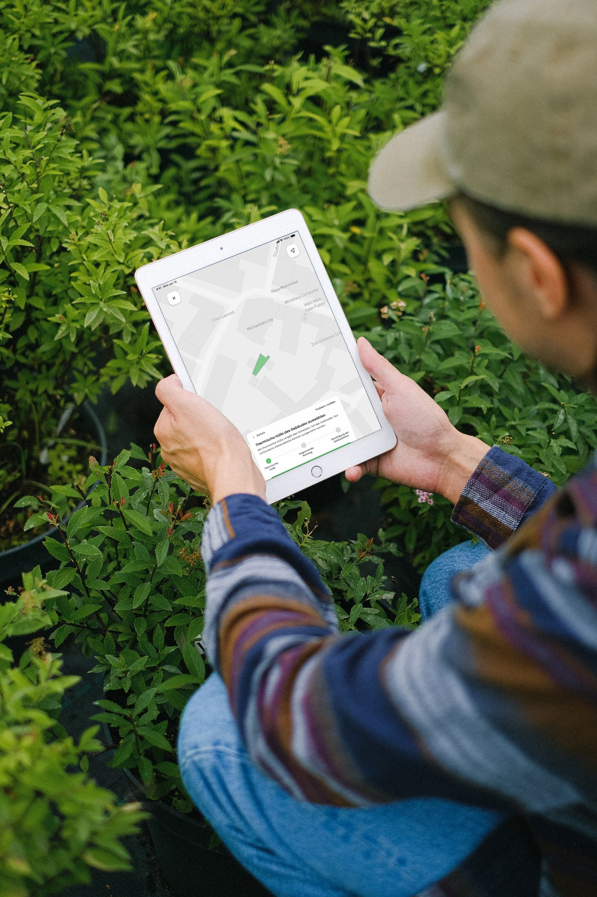
The context
Enter helps German homeowners navigate energetic renovation — insulation, heat pumps, windows, and the government funding that can cover a significant portion of it. The Bundesförderung für effiziente Gebäude offers up to 70% on certain measures, but to access it, homeowners need an iSFP: an individual renovation roadmap produced by a certified energy advisor following an on-site assessment.
That visit is the critical moment. The quality of data collected on site determines everything — the AI model that calculates energy performance, the retrofit recommendations that come out, and the legal validity of the document produced at the end.
When I joined, advisors were working from paper forms and personal notes. Data was inconsistent and difficult to feed into any automated processing pipeline. There was no proper tool for either side of the interaction — the advisor collecting data in the field, or the homeowner reviewing results and choosing their path forward.
I led design across both surfaces: the tablet-first field tool used during property visits, and the digital customer report advisors used to walk homeowners through their personalised renovation plan.
Appointment management
The appointment screen served as both briefing and starting gun. Before tapping "Termin starten", advisors saw client name and address, a map preview, a building size estimate, and quick actions to call ahead or navigate. The iSFP data section sat behind a deliberate lock — once tapped, data access was triggered, the session began, and the advisor was committed.
Post-completion, the same screen confirmed the data had been submitted — and surfaced the customer report, which had been locked throughout. The report only became available once the advisor had collected every required section of the building survey. It couldn't be generated until the data it depended on actually existed.
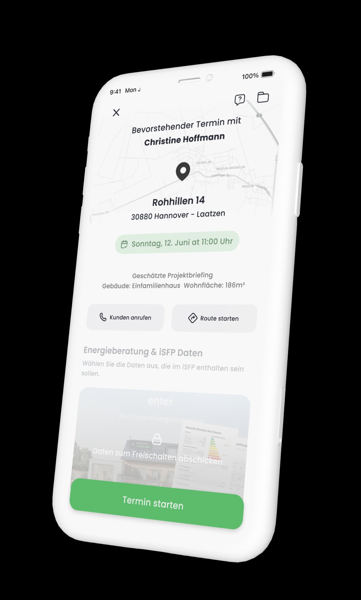
Before — data locked, "Termin starten" visible
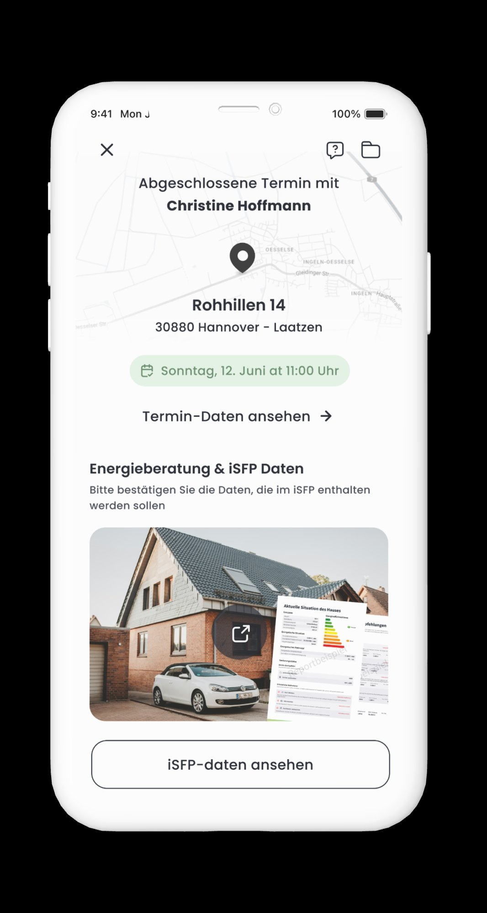
After — full data unlocked, iSFP ready
Building data capture
The field tool was structured around the iSFP format — house data, floors and rooms, construction materials, mechanical systems, and exterior. Advisors navigated between tabs, drilling into each floor and room in turn. Nothing was free-text where it could be structured: dropdowns, toggles, and preconfigured options kept data clean and consistent for the AI model downstream.
Each section followed the same pattern: enter data, take photos if relevant, move on. The tab structure meant the advisor always knew where they were in the survey — and exactly what was left. On a 186m² detached house, that gave them a reliable mental model without needing to manage it consciously.
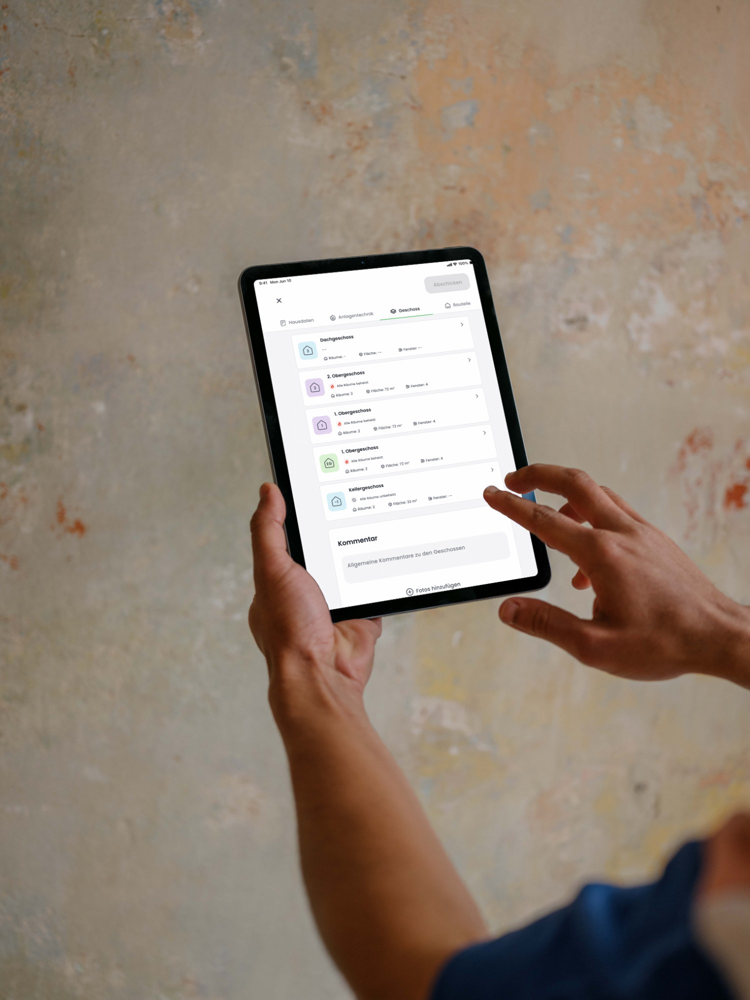
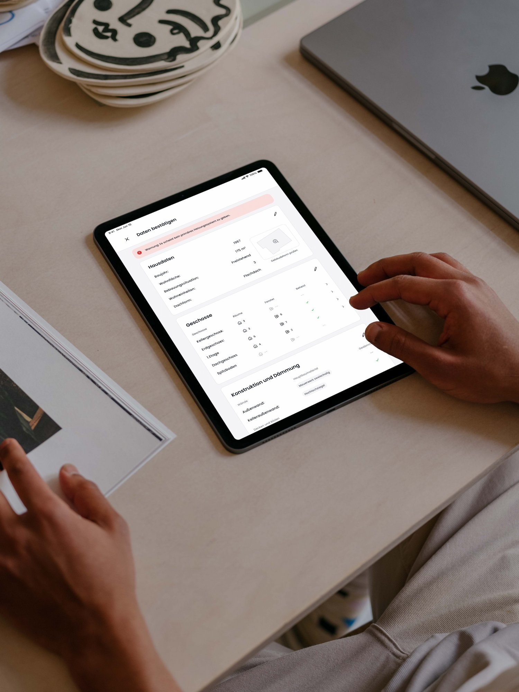
Data review — all building data confirmed before submitting to AI processing
Exterior — photos, facade material and wall construction captured in a single section
The floor plan feature
Windows are one of the most consequential variables in an energy model. Their position, dimensions, and glazing spec all affect the U-value of the surrounding wall — which directly influences which retrofit measures make financial sense and which don't. Getting this wrong skews the whole recommendation downstream.
The floor plan feature pulled in a pre-populated 2D footprint from cadastral and satellite sources, then let advisors place each window directly on the plan — dragging it to the correct wall, entering dimensions, confirming glazing type. One spatial interaction replaced three separate form fields.
The building footprint also served a second purpose: advisors could flag discrepancies between the registered data and what they observed on site, feeding corrections back into the dataset for future visits. Over time, the pre-populated data became more reliable.
Placing a window on the 2D floor plan — position, size and glazing confirmed in one step
The customer report
Once the field survey was submitted and the AI had processed the data, the advisor returned for a second session — this time with the homeowner, going through the report together. I designed this side of the product from scratch: a structured digital report that guided the advisor through the conversation and gave the homeowner a clear picture of their options.
The report walked through four stages: an overview of the assessment, projected energy costs if nothing was done, a ranked list of retrofit measures to choose from, and a final selection that fed directly into the iSFP document. At every stage, the numbers were traceable — rooted in the data collected on site, not estimates.
Choosing measures wasn't just about picking the cheapest option. The report showed savings potential, payback period, available subsidy, and energy class improvement — all for each measure individually, and then combined for any selection. The advisor's role was to explain the trade-offs; the tool made the numbers concrete.
Building overview, current energy class, savings potential and property value uplift — based entirely on data from the field visit.
Projected energy cost increases through 2064, plus a full breakdown of available Bundesförderung subsidies and iSFP bonuses.
AI-ranked measures with savings, payback, cost and subsidy. Advisor and homeowner select together — confirmed selection compiles into the iSFP.
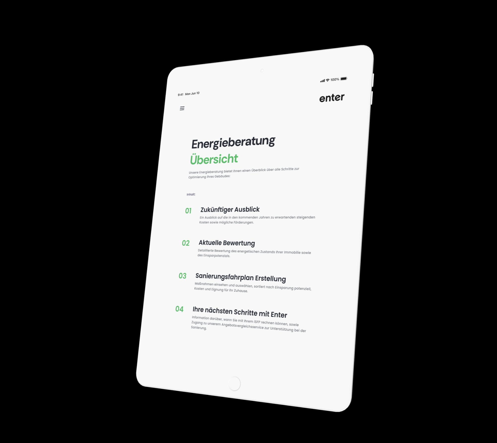
Report overview — structure and contents presented before the session begins
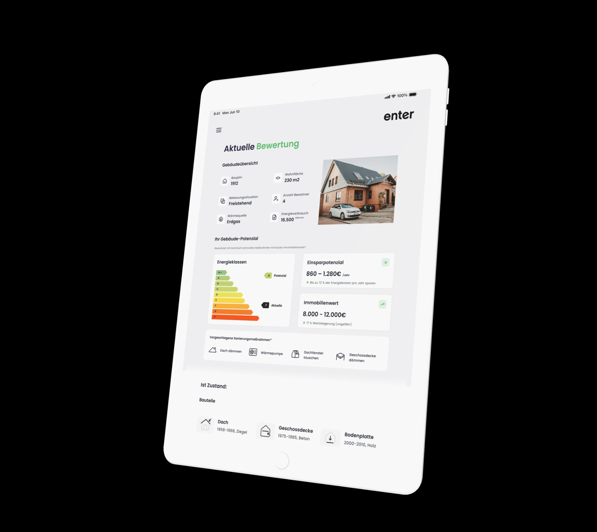
Aktuelle Bewertung — energy class, savings potential and suggested measures
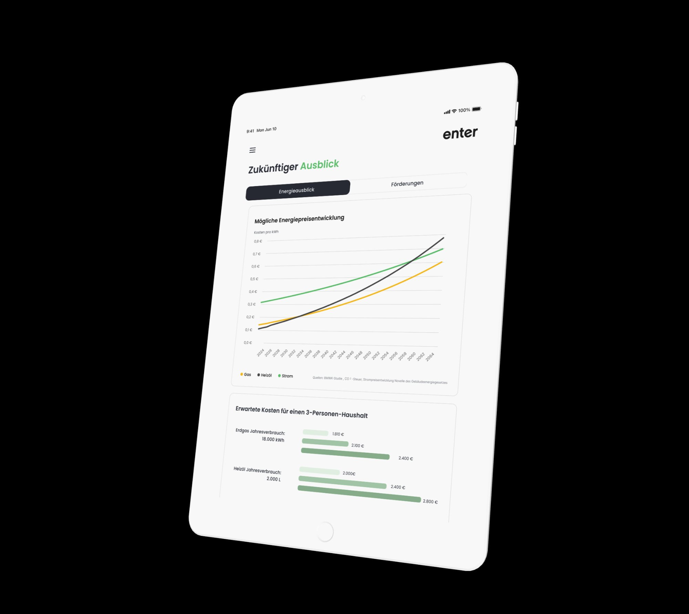
Zukünftiger Ausblick — projected gas, oil and electricity costs through 2064
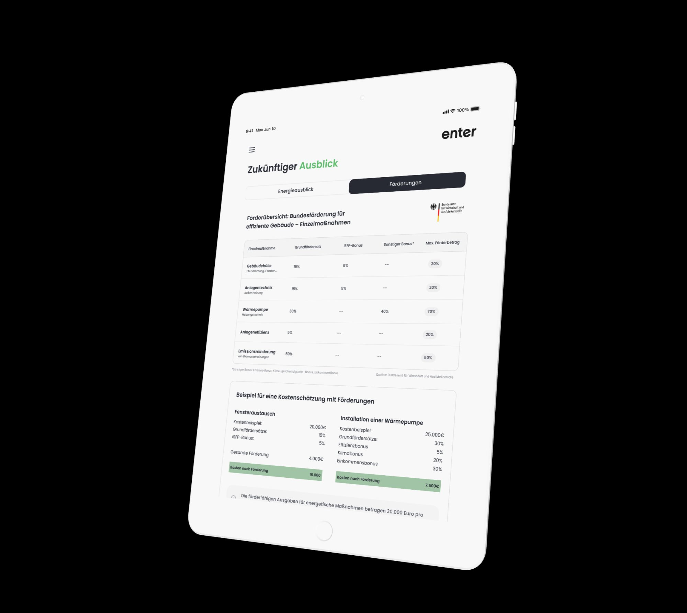
Förderübersicht — BEG base rates, iSFP bonus and worked cost examples
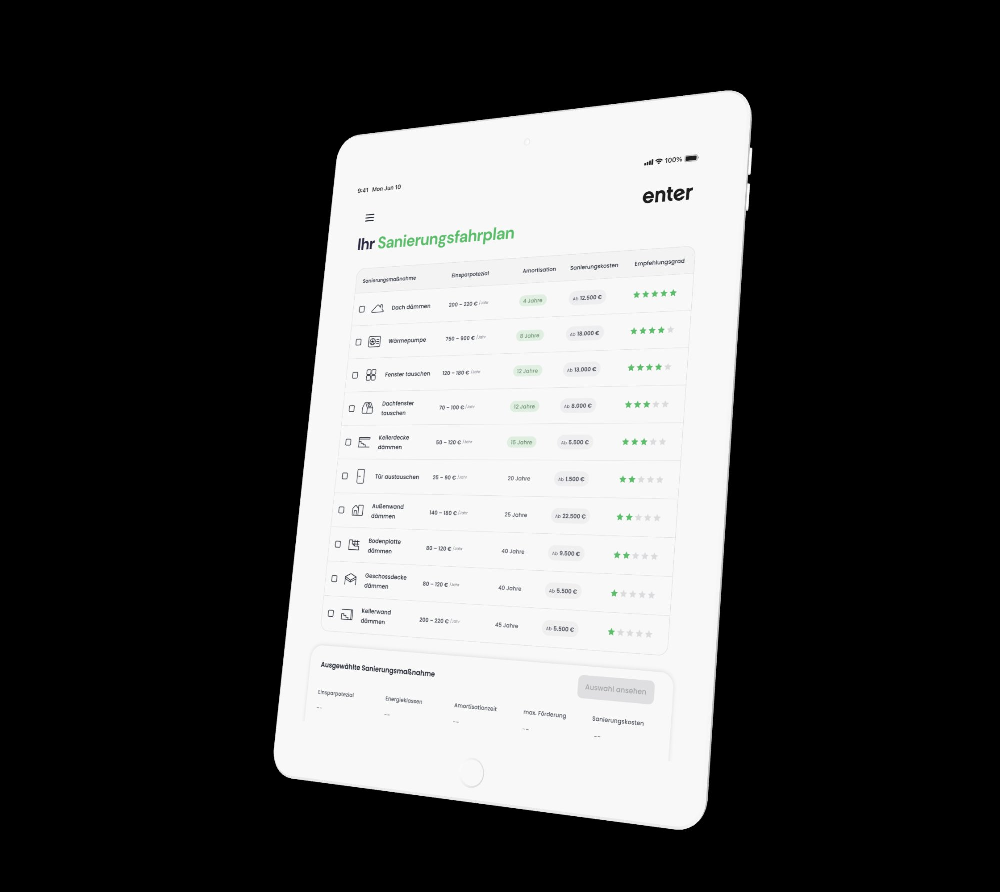
Sanierungsfahrplan — all measures ranked by savings, payback, cost and recommendation grade
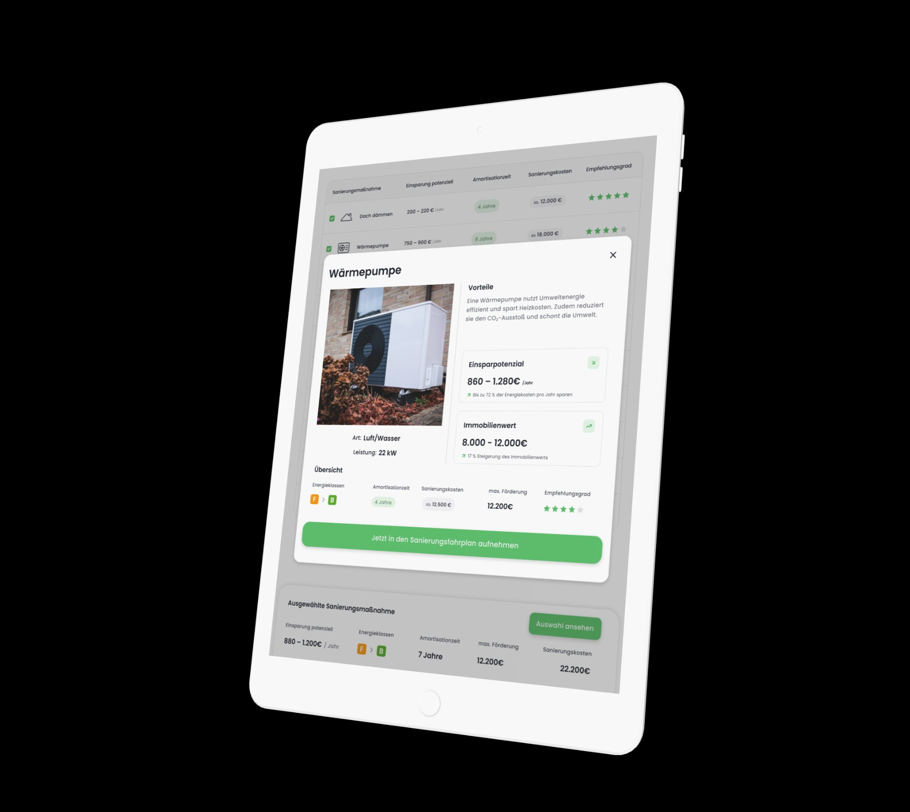
Measure detail — Wärmepumpe with savings, property value uplift and subsidy breakdown
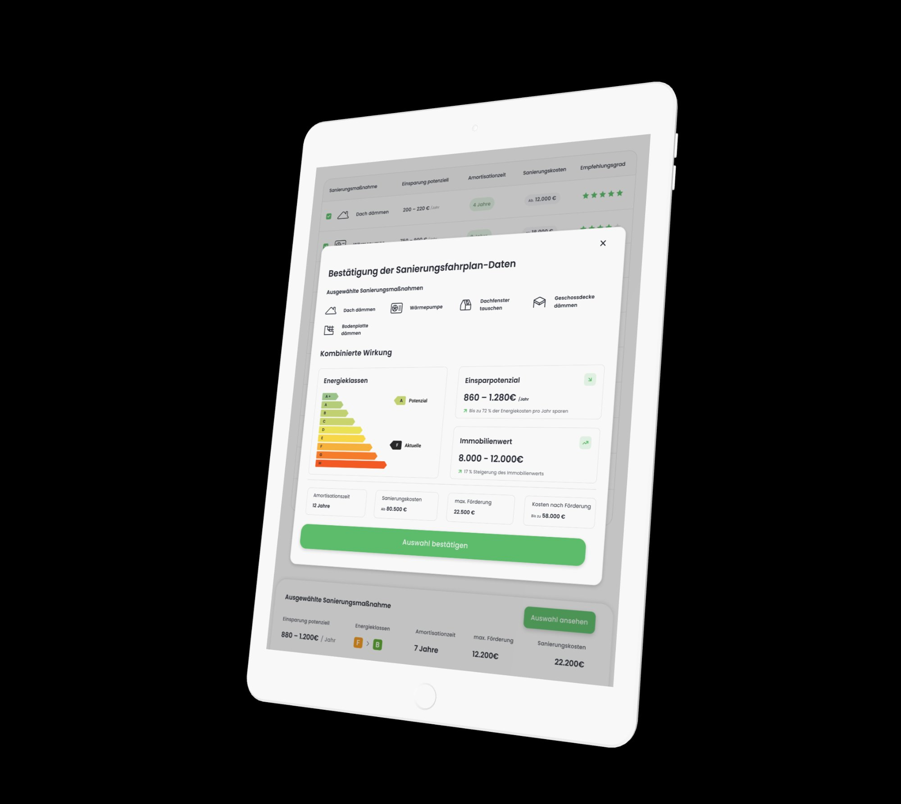
Selection confirmed — combined energy class improvement, subsidy and cost after grants
End to end
The product connected a doorstep visit to a legally valid government output. Designing both sides — field tool and customer report — meant understanding not just what advisors needed to capture, but what the AI model required to compute accurately, what format the iSFP demanded structurally, and what would give a homeowner enough confidence to sign off on a six-figure renovation.
A window placed on a floor plan feeds into the U-value for that wall, which changes the payback period of a window-replacement measure, which shapes whether a homeowner includes it in their selection. That selection becomes the iSFP. Precision in the field — a minute's careful work with the floor plan tool — determined what was possible at the end of the process.